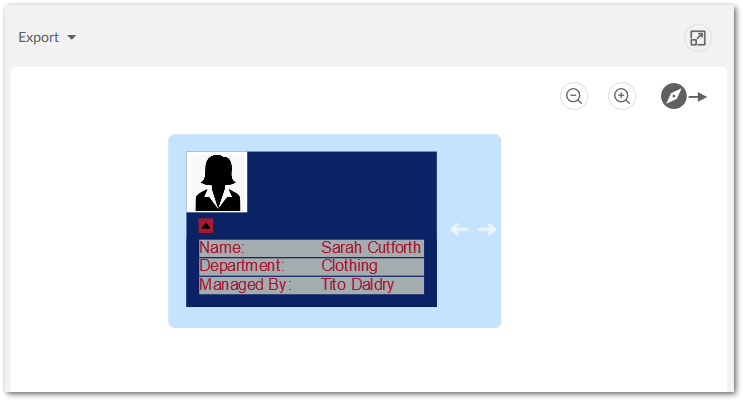
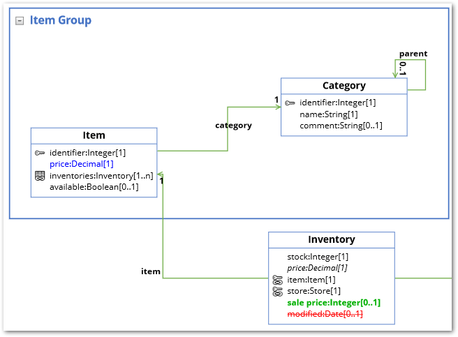
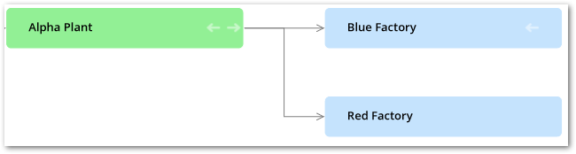

All Release Notes
- Version 2.1.0
- Version 2.0.1
- Version 2.0.0
- Version 1.4.6
- Release Notes 1.4.5
- Release Notes 1.4.4
- Release Notes 1.4.3
- Release Notes 1.4.2
- Release Notes 1.4.1
- Release Notes 1.4.0
- Release Notes 1.3.0
- Release Notes 1.2.1
- Release Notes 1.2.0
- Release Notes 1.1.0
- Release Notes 1.0.2
- Release Notes 1.0.1
- Release Notes 1.0.0
Version 2.1.0
Released: July 2021
New features
This release includes the following new features:
When viewing a data model graph, the search scope in the filter pane now includes fields. It also now automatically pares down display of data model elements containing the filter text as you type.
In graphs generated using the Display selected data service:
The filter pane now allows you to search for data values contained in the graph. The list of data model elements is reduced as you type to only show those elements that contain the value you are searching for.
The number of nodes available to open displays below node labels. When there are 10 or more node available, a table icon displays. Clicking the icon displays a list of records and allows you to select those that you want to display.
In graphs generated using the Display data using configuration service:
The filter pane now allows you to search for data values contained in the graph. The list of data model elements is reduced as you type to only show those elements that contain the value you are searching for.
When opening the context menu to display related nodes, the number of available nodes is included. If 10 or more nodes are available when you expand related nodes, a pop-up displays and allows you to select the nodes you want to display.
Changes in Functionality
This release contains no changes in functionality.
Changes to third-party libraries
This release contains no changes to third party libraries.
Closed Issues
This release contains the following closed issues:
[DMDV-2186] The link style does not reset to the default when clearing the field.
[DMDV-2185] The Edit graph display screen does not work on IE11.
Known Issues
This release contains the following known issues:
Any saved data model graph based on a duplicated model will refer to the original model and not the duplicated model. Since a saved graph is linked to the XML schema, this behavior is a result of data model duplication not duplicating the schema file name. Embedded models are not affected; only models in modules.
If all nodes to expand in a data value graph belong to the same table, the expand service includes the table name. When a table filter is used, the service to expand nodes cannot ascertain the table name to expand. Instead, the following generalized service labels display: Expand targets, Expand sources, Expand children, or Expand parents.
After running the Center service on a table, any of its expanded groups are collapsed.
Data model graphs are not automatically refreshed to reflect updates to displayed tables and foreign keys.
Orphan groups defined at the root of a data model are not displayed in graphs. However, fields defined at this level do display.
After resizing a node on a saved graph, the system still displays the default size for the node.
Data value graphs do not automatically refresh to reflect updates to displayed data, or nodes.
When using the containment type for a self-referencing node, it does not display in the graph.
The template configuration cannot be changed at runtime for custom data model graphs—those created using the Java API.
In data value graphs, users can move the graph but not graph nodes.
On Firefox 52 ESR, performance issues may occur when trying to display a data model graph that includes many tables.
Node position is recalculated after expanding. Therefore, node position may change.
When a table in a group is hidden, and the group is collapsed, the table's link still displays.
Graph templates include the option to show hidden fields, but not hidden tables.
Full screen mode is not supported on IE10 or Microsoft Edge.
Version 2.0.1
Release Date: May 2021
Bug fixes
The following issues were fixed in this release:
[DMDV-2075] Clicking the save button in the Graphical Configuration overrides custom modifications.
[DMDV-2119] An incorrect message displays when generating a data model that has a FK field that points to a dataspace that does not exist.
[DMDV-2142] A PDF cannot be exported when viewing a data value graph. using the Display data using configuration service.
Deployment note
Attention
When you deploy the TIBCO EBX® Data Model and Data Visualization Add-on, you must also deploy the TIBCO EBX® Digital Asset Manager Add-on. Otherwise, some features are inaccessible.
Version 2.0.0
Release Date: March 2021
Data value graphs
Data value graphs in this release contain the following new features and updates:
A visual editor is now available to create and edit data value and relationship graphs. The editor allows you to drag-and-drop to add tables and relationships to a graph. The editor provides the following enhancements and advantages over manual graph creation:
You get immediate visual feedback on changes to the configuration.
The add-on automatically handles the creation of settings required to add tables, create links to display relationships, and setting options to customize display.
The editor is accessible from a table even when no graph exists. This prevents you from having to navigate in EBX® to the Administration panel in the Advanced perspective to create a new graph.
The following image shows the new editor:
1)
Use the panel on the left-hand side to add and change the appearance of graph elements. For example, you can drag a table from left-to-right to add it to the graph.
2)
The Preview pane provides real-time visual feedback and allows you to: add and remove relationships, remove tables, open a detailed view of the table configuration.
For more information on using the editor, see Quick start.
When viewing a data value graph, you can now change configuration settings using the new editor (described above). As shown below, you can access the editor by selecting the highlighted icon.
You can now display digital assets managed by the TIBCO EBX® Digital Asset Manager Add-on on data value graph nodes. See Displaying digital assets on nodes.
You can add an asset from the following screens:
A table configuration's Node style tab:
By dragging from the Image palate in the graphical editor:

A new link configuration option allows you to set the label that displays in a node's context menu. This property is optional and if you do not specify a custom label, the label of the table that will be expanded displays.
When displaying relationships as lines, you can now set an arrow direction to meet business requirements. Use a link configuration's Link orientation option to set the following options:
1)
Set to One way arrow (Left side).
2)
Set to One way arrow (Right side).
3)
Set to Two way arrow.
All graph types
This release contains the following new features:
All graphs now have an undo option. Note that a history of actions is not maintained. This option only rolls back the most recent change to a graph.
Graphs can now display TIBCO EBX® associations over foreign keys, link tables, and XPath. In data model graphs you can choose the colors used to display the different association types.
Deprecated APIs
The isDisplayed() method was removed from the NodeContext class.
Version 1.4.6
Released: February 2021
Bug fixes
[DMDV-2037] The export, change orientation, and full-screen buttons do not work when viewing a graph via a workflow step.
Release Notes 1.4.5
Released: January 2021
Changes and updates
The following libraries were updated in this release:
Apache Standard TagLib library to version 1.2.3.
Spring framework library to version 5.2.9.
Jackson databind library to version 2.11.2.
Bug fixes
[DMDV-1893] The add-on services do not work when TIBCO EBX® is embedded in an iframe.
Release Notes 1.4.4
Release Date: October 20, 2020
Bug fixes
[DMDV-1866] Some images do not display correctly when using a custom URL for your TIBCO EBX® server.
Release Notes 1.4.3
Release Date: September 18, 2020
Bug fixes
[DMDV-1794] A deadlock in the add-on affects the server where EBX® is running.
Release Notes 1.4.2
Release Date: June 23, 2020
Updates and changes
The jQuery and Jackson Databind libraries were updated and the SLF4J library was removed.
Release Notes 1.4.1
Release Date: April 20, 2020
Bug fixes
[DMDV-1698] A deadlock in the add-on affects the server where EBX® is running.
Release Notes 1.4.0
Release Date: February 20, 2020
New features
The sections below highlight new in this release:
New data model graph features
Data model graphs can now display multiple data models. When a graph includes a table from an outside data model, users can right-click to select the Display external model service. Each outside data model displays using alternate colors to differentiate between them. Normal graph interaction is available when displaying multiple models. For example, users can apply templates to change appearance, re-arrange, filter, save and share the graphs. An additional feature for graphs containing multiple models is the level selector. This allows users to change the level of the graphs detail to: Field, Table, or Model. Choosing a level expands graph components to the selected level of detail and automatically resizes the graph.
The following image shows a data model graph with external models shaded and the base data model highlighted like a group:
Filter pane and table selection
The data model filter pane and table selection screens have been updated with:
Options to display and hide external data models.
An icon to indicate that a graph is displaying a table from an outside model, but the model is hidden.
Tabs that contain all, displayed, and hidden tables and data models.
New data value graph features
In addition to the option of adding one of the icons provided with the add-on, you can now update a table node style to include a custom icon. This functionality is provided through the new Image URL option when viewing a configured table's Node Style tab. The URL must point to an image located in the same domain as TIBCO EBX®.
The following image shows an example of adding a custom image to a node with a URL:
Attention
Saved data model graphs from previous add-on versions cannot be migrated and will be deleted.
Release Notes 1.3.0
Release Date: November 8, 2019
New features
The sections below highlight new in this release:
New graph features
The following updates have been made to graph functionality:
Administrators can set a new configuration option to automatically expand child and source nodes to display their respective parents and targets. When enabled, the add-on automatically expands nodes on graph open or when a user expands an existing node to display these child/source nodes.
As shown below, when viewing data value and relationship graphs, users can now change node shapes:
To improve the feel of the interface, the tooltip design has been updated and as shown below, graph button display locations have been changed:
API features
This release contains the following new and updated API features:
A custom service can now be written using the add-on's API to display a default data value graph based on record selection. See Displaying a default data value graph for a sample implementation.
Data value graph features including, but not limited to, Overview box display, access to detailed record views, and availability of contextual menu options can be enabled/disabled. The new
GraphDataFeaturesenumerates available features.
Bug Fixes
This release contains the following bug fixes:
[DMDV-1323] An exception is thrown when accessing a table.
[DMDV-1355] Datasets based on external models were not working as expected due to a bug in the add-on.
Release Notes 1.2.1
Release Date: August 6, 2019
Bug Fixes
This release contains the following bug fixes:
[DMDV-1229] Users can run Display selected data service from the Actions menu of the History table.
[DMDV-1230] Users can run Display data model service from the Actions menu of the Permission table.
Release Notes 1.2.0
Release Date: June 20, 2019
New features and enhancements
This release contains the following new features:
The Display data model graph service is now available to run when viewing a data model in the Data Modeler Assistant area.
By default, the ability to view a data value and relationship graph no longer requires configuration. The new Display selected data service is available from table Actions menus. Selected records and relationships display using default settings. In addition to standard navigation and export features, users can search for and toggle display of nodes and relationships. See Default graphs for more information.
The following image highlights some of the default features:
Data value graph services can now be called from a perspective or workflow. See Graphs in perspectives and workflows for more information.
The API now allows you to create custom node templates that determine node appearance. Customizable node components include, but are not limited to, images and data tables. See Node templates for more information.
The following image provides an example of a custom node:

Release Notes 1.1.0
Release Date: February 22, 2019
New features and enhancements
This release contains the following new features:
Data value graph orientation has been updated. When administrators configure or users view a graph, they can specify that nodes display: Left-to-right, Right-to-left, Top-down, or Bottom-up.
Dynamic labels can now be defined for data value graph nodes and links. The following types of labels can be defined:
Default: Label text can be directly entered, or data model elements selected. Labels based on data model elements automatically update based on changes to the associated value.
Localized: In addition to sharing the same features as default labels, these labels can leverage the EBX® localization feature.
Programmatic: Label definitions can be implemented in a Java class.
Node and link styles can now be based on the evaluation of an XPath expression. For example, you could specify that all graph nodes that refer to an employee with a status of inactive are colored red. You can also use a Java class to define programmatic styles for links.
Links and their corresponding values can now be filtered out of data value graphs. A conditional filter is used for each defined foreign key in the graph. If the filter evaluates to true, the relationship is removed.
Data model graphs can now be shared with other users.
Known limitations
This release contains the following known limitations:
The indicator and node label position are incorrect when expanded with many containment levels.
When using a curved line to display a link, the arrow doesn't exactly align with the line.
Bug Fixes
This release contains the following bug fixes:
[DMDV-258] The Load a graph menu displays even when users do not have permission to view any of a dataset's tables.
[DMDV-753] When updating a record label in a parent dataset, the external dataset's node label is not updated.
[DMDV-828] When generating a model graph, fields are still displayed even when set to Not a data node in the data model.
Release Notes 1.0.2
Release Date: January 11, 2019
Bug fixes
This release contains the following bug fixes:
[DMDV-867] The Display data model service cannot generate a graph when the data model links to an external table, which in turn links to another external table.
Release Notes 1.0.1
Release Date: December 3, 2018
Bug fixes
This release contains the following bug fixes:
[36371] Provide an API to display or hide the Close button.
[36394] Due to low resolution, images of exported graphs are blurry. This prevents users from being able to zoom in and get detailed information.
[36840] The Display data using configuration service does not work on a table row toolbar.
Release Notes 1.0.0
Release Date: October 26, 2018
Overview of features
By generating interactive graphs of your data, relationships, and data structure, the EBX® Data Model and Data Visualization Add-on allows you to:
View data structure by rendering data model graphs. Data model graphs are not limited to EBX® data sources. Using the API, graphs can be generated from external sources.
View data values and relationships by rendering graphs that show selected values and their relationships.
The following sections highlight additional features and functionality of the EBX® Data Model and Data Visualization Add-on.
Data model graphs
By default, no configuration is required to display data model graphs. You can display a graph by running the Display data model service from a table or dataset Actions menu. What displays in a graph depends on the model content from which it was generated and the template settings. The following image and table describe data model graph components.

1) Groups and Tables | A box is automatically drawn around components included in a group. You can collapse, expand, re-size and rearrange groups. The bottom-right corner of the images shows a collapsed group. Tables display their labels and fields. Standard DMA icons are used to indicate keys and relationships. |
2) Relationships | Arrows indicate foreign key relationships and their direction. The labels correspond to each foreign key field. |
3) Underlined field, plus icon, and italic fields. | An underlined field belongs to a table located outside of the current dataset. The plus icon next to a field indicates you can expand to display more information, such as fields included in a complex type. Fields in italics represent inherited fields. |
4) Table located outside of the current dataset | When a table is located outside of the current dataset, it will be shaded in the graph. The color of the shade is editable in the template. |
5) Orphan fields | Fields that are not part of a table display without a title. |
6) Display additional fields | When a table holds more fields than can display, use the arrow icon to expand/collapse. |
For more information on interacting with data model graphs, see Interacting with data model graphs.
You can save and load data model graphs. When loading a saved graph the add-on can help you visualize changes to model structure. As shown below, updated graphs highlight new items in green, changed items in blue, and deleted items in red (colors may differ depending on configuration):
Model graph API
The EBX® Data Model and Data Visualization Add-on's API allows you to generate custom data model graphs from external sources and customize templates to alter look and feel. See Generating a model graph from an external source for more details. Additionally, you can create a custom service from which users can generate a custom data model graph. See Generating from a service for more details.
Data value and relationship graphs
A data value graph is a visual representation of how data values relate to each other. A graph can display relationships between multiple data models. Administrators configure the way relationships render when users run the Display values and relationships service by assigning a display type to each relationship. The table below describes the available types:
Type | Example and description |
|---|---|
As Lines | As shown in the following image when you set the display to lines, values display in rectangular nodes and lines between nodes represent relationships.  |
As Containers | As shown in the following image containers show a parent/child relationship as nodes within nodes. Outer nodes are the parents of the smaller, inner nodes.
|

The following image highlights some of the data value and relationship graph features; see Configuring graphs for more details:
Value graph API
The EBX® Data Model and Data Visualization Add-on's API allows you to:
Generate an existing data value and relationship graph for display in a UI tab. See Data value and relationship graph options for more details.
Write a custom service from which users can generate an existing data value and relationship graph. See Displaying a graph from a custom service for more information.
Create a custom filter for data value and relationship graphs. See Filtering data values and relationships for more details.
Known limitations
The EBX® Data Model and Data Visualization Add-on has the following known limitations:
Any saved data model graph based on a duplicated model will refer to the original model and not the duplicated model. Since a saved graph is linked to the XML schema, this behavior is a result of data model duplication not duplicating the schema file name. Embedded models are not affected; only models in modules.
If all nodes to expand in a data value graph belong to the same table, the expand service includes the table name. When a table filter is used, the service to expand nodes cannot ascertain the table name to expand. Instead, the following generalized service labels display: Expand targets, Expand sources, Expand children, or Expand parents.
After running the Center service on a table, any of its expanded groups are collapsed.
The Display data model service is not available in the EBX® Data Modeler Assistant (DMA).
Data model graphs are not automatically refreshed to reflect updates to displayed tables and foreign keys.
Orphan groups defined at the root of a data model are not displayed in graphs. However, fields defined at this level do display.
After resizing a node on a saved graph, the system still displays the default size for the node.
Data value graphs do not automatically refresh to reflect updates to displayed data, or nodes.
When using the containment type for a self-referencing node, it does not display in the graph.
The template configuration cannot be changed at runtime for custom data model graphs—those created using the Java API.
In data value graphs, users can move the graph but not graph nodes.
On Firefox 52 ESR, performance issues may occur when trying to display a data model graph that includes many tables.
Node position is recalculated after expanding. Therefore, node position may change.
When a table in a group is hidden, and the group is collapsed, the table's link still displays.
Graph templates include the option to show hidden fields, but not hidden tables.
Full screen mode is not supported on IE10 or Microsoft Edge.
In workflows, no user task is available to run visualization services.
The Display data values and relationships service is not available for perspectives.
The add-on cannot generate a data value and relationship graph that includes more than 2000 nodes.